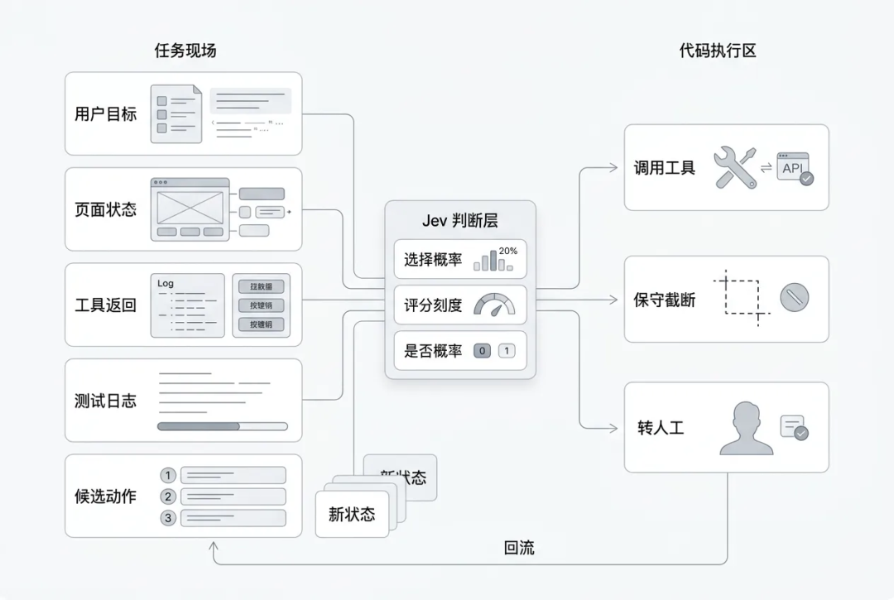
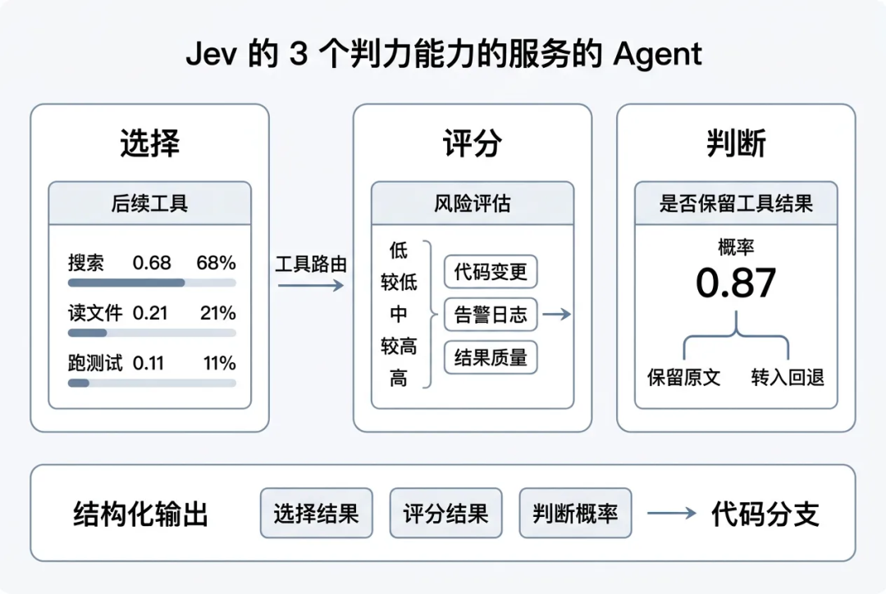
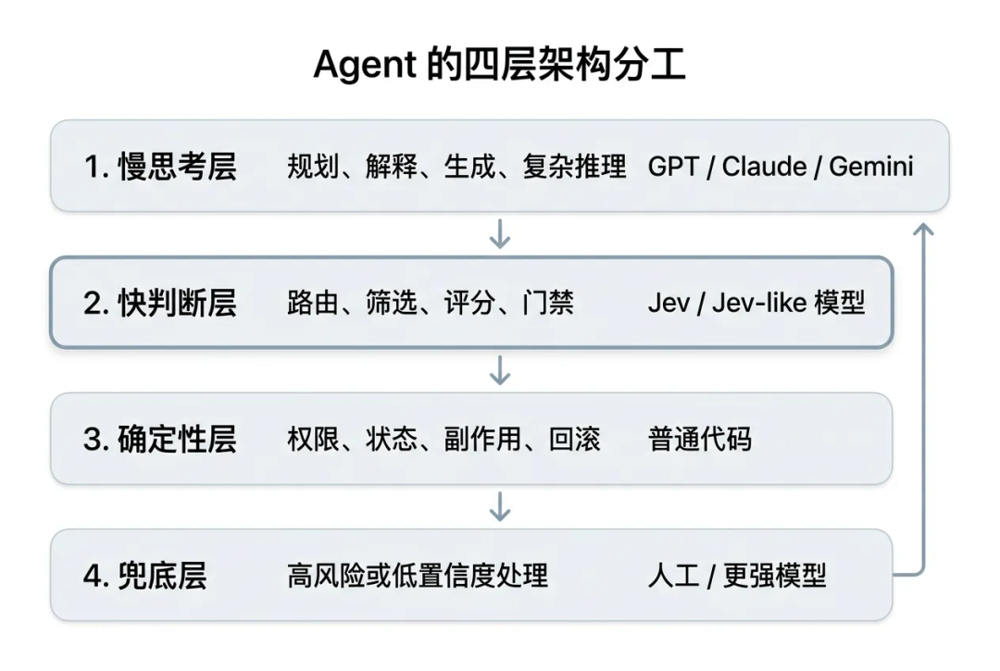
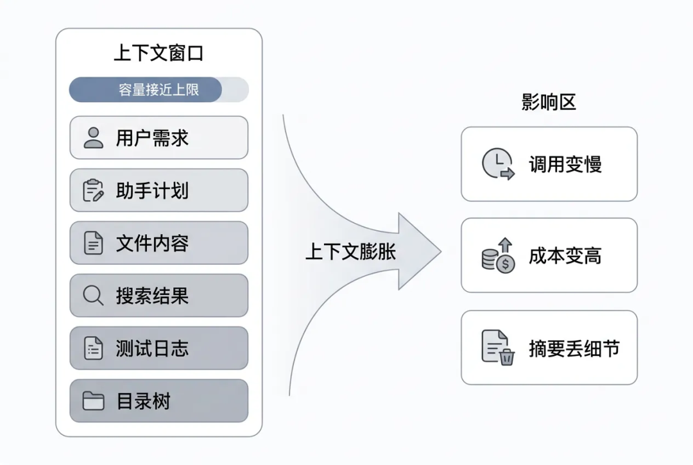
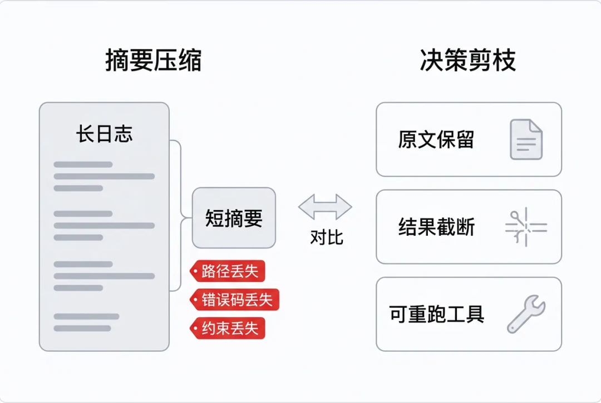
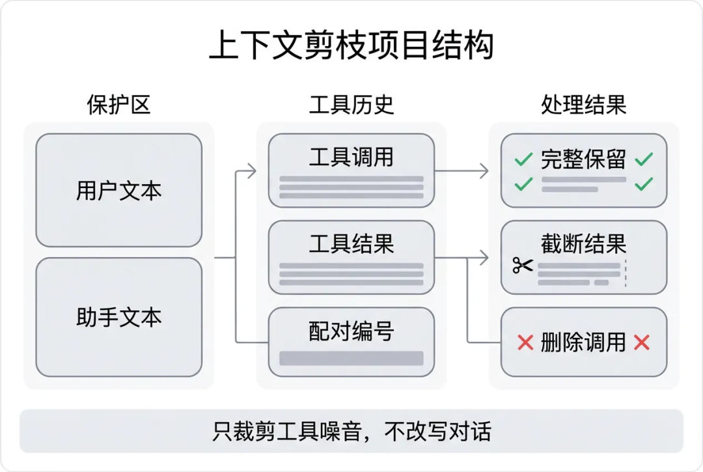
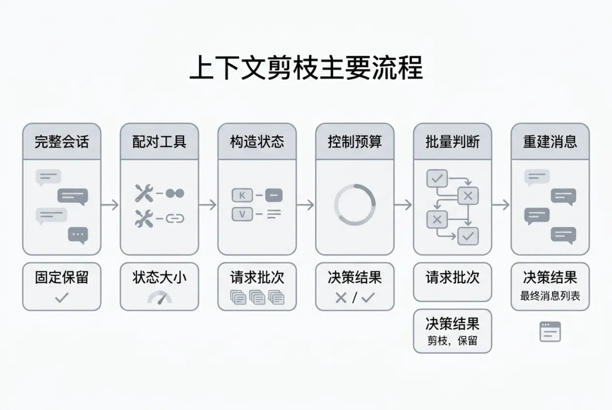

一万字Jev 工程实践长文：把 Agent 的“判断题”从大模型里拆出来
作者：daryl，高级前端开发
丨 导语 从 TypeSafe AI 的 System One Model，到 fast-jev-compaction 的上下文剪枝，再到一个可运行的本地尝试
最近 Jev 很火。它的传播路径很典型：先是 TypeSafe AI 发布一个听起来有点反常识的新模型，再是 Hacker News、知乎、Reddit 开始争论，接着 GitHub 上很快出现一批 Demo。有人拿它玩 Doom，有人拿它跑 Mario，也有人拿它接进浏览器自动化、代码审查、Agent 路由和上下文压缩里。
我一开始对它也有点怀疑。一个“不生成文本”的模型，能有多大空间？现在 GPT、Claude 已经能做 structured output，也能走 tool calling，为什么还要单独搞一个 Jev？
把几篇资料看完，再读 fast-jev-compaction，最后自己仿写了一个小 Demo 之后，我觉得它最值得聊的不是“模型本身有多神”，而是一个更具体的工程问题：
Agent 里很多模型调用不是为了生成答案，而是为了替代码做一次判断。
这句话如果成立，Jev 就不是“更便宜的 GPT”。它更像 Agent 系统里缺了很久的一个零件：快判断层。

一、Jev 是什么：把生成问题改成判断问题
Jev 是 TypeSafe AI 发布的 System One Model。它和我们熟悉的聊天模型不太一样：聊天模型擅长生成文本，Jev 则刻意放弃文本生成，只返回类型化的概率决策。
换句话说，它不是让模型“说一段话”，而是让模型回答一个程序能直接使用的问题：选哪个、打几分、是不是。
它的输入可以比较杂：用户目标、页面状态、工具结果摘要、业务字段、候选动作。它的输出必须很窄：选择哪个、打几分、某个命题成立的概率是多少。

它主要有三种原语：
| 原语 | 中文理解 | 输出形态 | 适合场景 |
|---|---|---|---|
| Choice | 单选题 | 选项 + 每个选项概率 + confidence | 工具路由、动作选择、分类 |
| Score | 打分题 | 连续分数 + 概率分布 + confidence | 风险评分、质量评分、相关性评分 |
| Noul | 判断题 | 0 ~ 1 的概率 | 是否保留、是否危险、是否达成目标 |
举个最贴近开发的例子。
如果现在上下文里有一段测试日志，系统只想知道“这段日志还要不要保留”，传统大模型可能会输出一段解释：
这段日志包含失败原因、文件路径和鉴权相关信息，建议保留。这句话人能看懂，但代码还要继续解析。
Jev 的返回更像这样：
{
"answers": {
"result_t3": {
"noul": 0.87
}
}
}这就可以直接进入代码分支：
if (keepResult >= 0.5) {
keepFullResult();
}这就是 Jev 最核心的变化：把模型输出从“文本”变成“可执行的概率判断”。
和 GPT / Claude 的 structured output 相比，Jev 的差别不是“能不能返回 JSON”。现在大模型都能返回 JSON。真正的差别是：Jev 从一开始就放弃自由文本生成，只做封闭输出空间里的概率判断。

这带来一个很适合 Agent 的架构分工：
| 层次 | 职责 | 典型组件 |
|---|---|---|
| 慢思考层 | 规划、解释、生成、复杂推理 | GPT / Claude / Gemini |
| 快判断层 | 路由、筛选、评分、门禁 | Jev / Jev-like 模型 |
| 确定性层 | 权限、状态、副作用、回滚 | 普通代码 |
| 兜底层 | 高风险或低置信度处理 | 人工 / 更强模型 |
需要注意的是，Jev 不是“更便宜的 GPT”。它不适合写文章、解释复杂代码，也不适合做长链路规划。它更适合放在 Agent 内部，处理那些输出空间固定、调用频率高、又需要语义理解的小判断。
Jev 最适合的位置，不是 Agent 的大脑，而是 Agent 的反射神经。
二、为什么 Agent 需要一个快判断层
现在写 coding agent，最容易遇到的瓶颈不是“模型不会说话”，而是上下文越来越长。
一个稍微真实一点的修 Bug 过程，通常会经历这些步骤：
用户描述问题；
Agent 搜索代码；
读取多个文件；
执行测试；
查看失败日志；
再读取相关文件；
修改代码；
再跑测试；
如果失败，继续循环。
每一步都会往历史里塞内容。用户约束、助手推理、工具调用、工具结果、错误日志、文件片段，全都堆进一个 context 里。

真正撑爆上下文的，往往不是用户说的话，也不是助手说的话，而是工具结果。
| 内容类型 | 是否经常很长 | 是否必须全文保留 | 典型风险 |
|---|---|---|---|
| 用户需求 | 否 | 是 | 删掉会丢约束 |
| 助手回复 | 中 | 通常要保留 | 删掉会丢计划和承诺 |
| read_file 结果 | 是 | 看情况 | 文件全文可能过期或可重读 |
| search_content 结果 | 是 | 看情况 | 很多匹配只是探索痕迹 |
| execute_command 日志 | 是 | 看情况 | 失败栈重要，成功日志可能无用 |
| list_dir 结果 | 是 | 通常不需要全文 | 目录树容易占空间 |
这里有一个很具体的例子。
原始测试日志可能是：
FAIL order-export.test.ts
Error: Timeout of 5000ms exceeded
at exportOrders (/repo/src/services/orderExport.ts:42:19)
Expected authorization header to be preserved.如果被摘要成：
之前订单导出测试失败了。听起来没错，但关键细节已经没了：
order-export.test.ts是哪个测试失败；5000ms是什么超时阈值；/repo/src/services/orderExport.ts:42:19是具体定位；authorization header说明这个问题不只是性能，还牵涉鉴权约束。
所以传统 summary 有一个天然问题：它能省 token，但会改写事实。对 coding agent 来说，这个代价有时候很高。
上下文压缩最怕的不是删掉废话，而是把关键事实改写成一句“差不多”。
我们当然可以继续用通用大模型做上下文压缩。比如让模型读完整历史，然后输出一段总结。
这条路能用，但在高频 Agent 里会遇到三层断裂。
第一层：生成成本和判断需求不匹配
很多时候，系统不是想让模型“写一段总结”，而是想知道某个工具结果还值不值得留。
这是一个判断题，不是作文题。
如果为了回答“这段日志还要不要留”，调用一次大模型，让它读完整上下文、生成一段解释、再被代码解析，这个链路太重。
| 任务 | 真正需要的输出 | 用通用 LLM 的浪费点 |
|---|---|---|
| 是否保留工具结果 | 0 ~ 1 概率 | 生成解释文本 |
| 该调哪个工具 | 枚举选项 | 生成 reasoning + action |
| 搜索结果是否相关 | 分数 | 输出自然语言评价 |
| 是否转人工 | 布尔概率 | 写判断理由 |
第二层：摘要会破坏可复核性
工具结果常常是后续定位问题的证据。文件路径、错误码、栈信息、命令参数，都是精确内容。摘要会把这些精确内容变成“含义相近”的描述。
对文章、会议纪要来说，这种改写可以接受。对代码修复来说，风险更高。
因为 Agent 下一步不是“理解大意”，而是要继续执行动作。
第三层：置信度没有进入代码分支
通用大模型也可以说“我有 80% 把握”。但这通常只是文本里的自我描述，不一定是经过校准的概率。
Jev 的设计目标是把概率变成接口返回值，让代码可以用阈值控制行为：
| 概率区间 | 系统动作 | 说明 |
|---|---|---|
| >= 0.8 | 自动执行 | 适合低风险、高重复场景 |
| 0.5 ~ 0.8 | 保守处理 | 截断、保留摘要、请求补充信息 |
| < 0.5 | 删除或回退 | 低价值内容可清理，高风险场景转人工 |
当然，这里要非常谨慎。概率不是安全证明，必须用自己的数据做校准和 shadow mode 验证。
通用模型的问题不是不聪明，而是它把“判断”包装成了“生成”。
三、fast-jev-compaction：不做摘要，只做保留决策
fast-jev-compaction 是 GitHub 上一个很有代表性的 Jev 项目。它的目标不是让 Jev 写代码，也不是让 Jev 接管 Agent，而是处理一个更具体的问题：Claude Code / coding agent 的历史上下文越来越大，哪些工具调用和工具结果可以删？
它的策略很克制：
用户文本不改写；
助手文本不改写；
工具调用和工具结果配对处理；
旧工具结果要么完整保留，要么截断，要么删除；
如果 Jev 失败或压缩收益不够，可以回退到原来的 summary 流程。

这和传统 summary 是两条不同路线。
传统 summary 的做法是把旧历史改写成一段短文本。优点是省 token，缺点是路径、错误码、命令参数这类细节可能被“概括掉”。fast-jev-compaction 的做法是保留原文的精确性：重要的原样留下，不重要的直接删，中间态就保留调用并截断结果。
它真正有意思的地方在于，它没有沿用“让大模型总结历史”的惯性，而是把上下文压缩拆成两个判断题：
keepCall：这个工具调用本身还重要吗？
keepResult：这个工具结果全文还需要保留吗？这两个概率组合起来，就能得到三种动作：完整保留、只保留调用并截断结果、调用和结果一起删除。
fast-jev-compaction 是一个 Claude Code 插件，也可以作为 npm 库使用。它解决的问题很窄：当会话需要 compact 时，不再把旧历史交给大模型总结，而是让 Jev 对历史里的工具调用逐个打分，判断哪些应该原样保留，哪些只需要留下调用痕迹，哪些可以整体删除。
它的核心约束是：用户文本和助手文本不改写；只处理工具调用和工具结果。
这个约束很重要。用户文本里通常有原始需求和硬约束，助手文本里有已承诺的计划和正在执行的思路，这两类内容被摘要改写后容易变味。工具结果不同：它们占空间最大，也最容易过期，而且很多内容可以重新读取或重新执行。
所以 fast-jev-compaction 不是“总结器”，而是“工具历史清理器”。它做的不是把历史改写成一段更短的话，而是在每个工具调用上做一次保留价值判断。

它的设计可以拆成三层：
| 层次 | 做什么 | 为什么重要 |
|---|---|---|
| 对象层 | 把 tool_use 和 tool_result 配成一组 | 避免留下孤立调用或孤立结果 |
| 判断层 | 为每组工具历史生成 keepCall / keepResult 两个问题 | 把复合压缩任务拆成两个窄判断 |
| 执行层 | 根据阈值执行 keep / drop_result / drop_call | 让压缩动作可测试、可回退、可统计 |
这个项目很适合用来理解 Jev，因为它把 Jev 的优势落到了一个真实问题上：高频、封闭、可回退、需要概率，但不需要生成。
四、Demo 实现拆解：从历史消息到压缩决策

它的主流程可以拆成 6 步：
收集历史里的
tool_use和tool_result；按
tool_use_id配对；标记 pinned：首条消息、最近 N 条消息固定保留；
构造给 Jev 看的
state；对每个非 pinned 工具调用问两个
Noul问题；根据
keepCall/keepResult重建消息列表。
我们在 Demo 里保留了这个主流程。
📍 来源：src/compact.js 第 28-49 行 ```